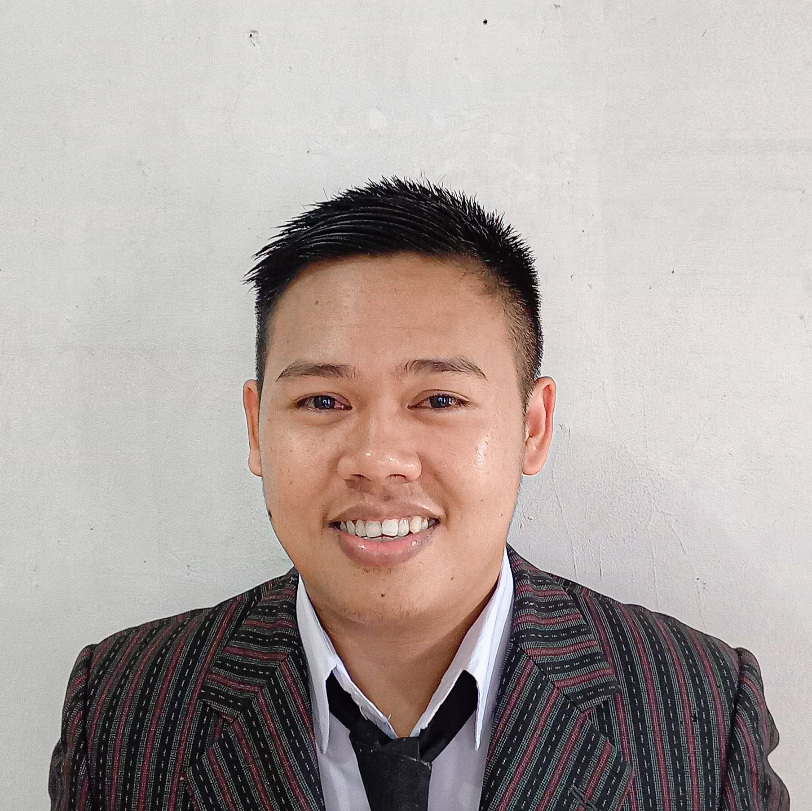

About Me
I am an Automotive Vocational High School graduate in 2017, Have experience as a Production Operator for 4 years in automotive and food manufacturing. Having skills in the IT field such as diagnosing hardware and software damage on personal computers (PC) and laptops, and having basic web development HTML, CSS, and Javascript
Education
- Motorcycle Engineering Automotive
State Vocational School 1 Plered, 2017
Work Experience
- PT. POSCO IJPC ( JUNIOR PRODUCTION OPERATOR )
November 2018 - November 2020
- Prepare the coil according to the PO that has been given
- Inserting the coil into the uncoiler and running the machine (Mini rotary share)
- Checking the length, width, and thickness of the process sheet with a caliper, tape measure and micrometer.
- Packing the results of the process using plastic rope strapping if the sheet results of the process is large or exceeds the weight 500kg using strapping using an iron rope
- One day target in the process of reaching 10 – 12 tons of coil.
- PT. SANTOS JAYA ABADI II ( PRODUCT HELPER )
- Running packing coffee machine according to company SOP
- One machine can produce 20,000 - 25,000 pcs depending on the speed of the machine.
- Helping the production area
- PT. SUKANDA JAYA – DAIMON COLD STORAGE ( PRODUCITION WORKER )
january 2023 - july 2023
- Prepare flour according to PO from scaling
- Running a flour sifting machine
- In one shift, 4,550 – 5,120 tons of flour can be sifted.
- Help the mixing area
- Prepare the spices that are listed on the E ticket which is given scaling
- Running the kronos pro machine for mxing.
- PT Tempo Scan Pacific Tbk ( Operator weighing )
july 2023 - present
- Prepare the material to be weighed according to the formula.
- Using Velocity sap on the tablet to see how much material is needed and do label printing.
- Checking the completeness of 100% material that will be batched.
- Comply with OPRP (Operational Pre Request program).
- Comply with and Execute GMP (GOOD MANUFACTURING PRACTICE)
November 2021 - November 2022
Skills
Soft skills
- Caliper
- Micrometers
- Microsoft word, and power point
- Adobe Photoshop, Premiere Pro, and After Effects
- SAP (System Application and Product in data processing)
Hard skills
-
IT Support
Troubleshooting damage to hardware and software, networking, operating systems. - Basic web development
HTML & CSS, JavaScript -
Microsoft Excel
Get to know Important Functions, Formulas, and Formula Bars, Get to Know Mathematical Functions (SUM, AVG, MIN, MAX), and Make use of VLOOKUP and Checklist for daily tasks